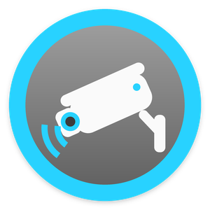
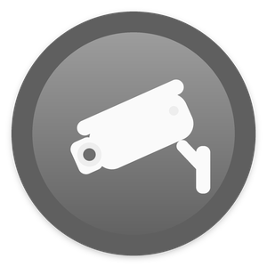
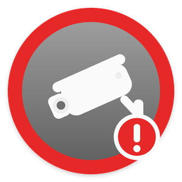
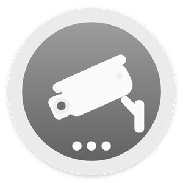

Set up every camera in three steps
- Upload both drivers with Driver > Add or Update Driver or Agent:
DirectorLink-Hikvision.c4zandDirectorLink-Hikvision-Camera.c4z. Keep these exact file names: a "(1).c4z" copy installs as a separate driver. Search DirectorLink and add DirectorLink · Hikvision to the room where new cameras should appear (for example a "Cameras" room). It shows in the project as Hikvision Hub. - In the hub's properties, enter the camera Username and Password. The hub searches the network and shows what it found in Found On Network.
- Run Actions > Add New Cameras. The hub checks the login first, then adds every camera, names it, and fully configures it (address, ports, Digest login, channel). With Sub Stream To H.264 on Automatic (the default), each camera also switches its sub stream to H.264 so Control4 can play it. The name is the camera's existing Control4 name, else its NVR channel name, else its on-screen name. Then drag each camera to its room.
Cameras added later: run Search Network and Add New Cameras again. Only the new ones are added. Cameras you added by hand are picked up too: the hub sees every DirectorLink · Hikvision Camera driver in the project.
The alerts tile
The hub appears in Composer as Hikvision Hub. Add it to a room menu (for example Security) in Composer's Navigator settings, and rename it to something homeowners understand, such as Camera Alerts. Tapping the tile turns alerts on or off for every camera.

AlertA camera raised an alert
Alerts offOff or snoozed
AttentionA camera is offline or its login failed
WorkingSearching or adding camerasAlerts off pauses the Alert events and notifications. Detection events (motion, person, line crossing...) keep running automations such as lights. Each camera also has its own alerts switch in its controls.
One notification for all cameras
Program once on the hub instead of on every camera:
When Hikvision Hub → Camera Alert → Send notification "LAST_ALERT_TYPE at LAST_ALERT_CAMERA" with the attachment Snapshot from the camera that raised the alert.
Other ideas: when the security system arms, run SET_ALERTS On; when it disarms, SET_ALERTS Off. Use Camera Offline to notify the installer.
Properties
| Property | Description |
|---|---|
| Status | What the hub is doing and what to do next, in plain language. |
| Cameras | Cameras in the project, how many are online or disabled, which are offline, have a login problem, or have no H.264 video. |
| Found On Network | Result of the last search: cameras, NVRs, how many are not added yet or ignored, NVR channels whose camera is disconnected (added when they reconnect), cameras that still need activating. |
| Username / Password | The login used for every camera. |
| NVR Username / Password | Only if the NVR uses a different login. Used to read the NVR's camera names, and for cameras that are only reachable through the NVR. |
| Camera Names | Automatic (default): the name of an existing Control4 camera with the same IP, else the NVR channel name, else the camera's on-screen name, else model and IP. Or only the camera's own name, or model and IP. |
| Extra Camera IPs | Cameras on another subnet or VLAN that the network search cannot reach: 10.0.5.20, 10.0.5.21:8080. |
| Sub Stream To H.264 | Control4 plays H.264 only. Automatic (default): cameras the hub adds switch their sub stream to H.264 (the main stream, used for recording, is not touched); choosing Automatic also applies it to cameras already added. Off: leave the cameras as they are. |
| Ignored Cameras | Cameras Add New Cameras skips: a camera IP (also its NVR channel), 192.168.50.10/3 for one NVR channel, or an NVR IP for all its channels. |
| Alerts | Master alerts switch (same as the tile). |
| Default Alert On | The Alert On setting given to new cameras: any detection, people and vehicles, or people only. |
| Snapshot With Alerts | Keep a snapshot of the alerting camera for notifications (1280 px wide when the camera can scale its pictures, else its sub stream picture). |
| Check For Updates | Off (default). On: once a day the hub asks GitHub for the latest release and shows it next to Driver Version. Nothing about this home is sent. |
| Log Level | Debug output to the Lua tab. |
Actions
| Action | What it does |
|---|---|
| Search Network | Finds Hikvision cameras and NVRs (Hikvision SADP discovery, plus Extra Camera IPs) and reads the NVR's camera names. |
| Add New Cameras | Checks the login, then adds and configures every camera that is not in the project yet. |
| Update Camera Names | Renames the cameras the hub added from the best name available now (for example after fixing the login or naming the NVR channels). |
| Apply Login To All Cameras | Sends the hub's login to every camera it added (also done automatically when the login changes). |
| Set All Sub Streams To H.264 | Control4 plays H.264 only. Switches every camera's sub stream to H.264; main streams are left alone. Each camera's Video line shows the result. |
| Camera List | Prints every camera, its address and state, and what is on the network but not added, to the Lua tab. |
Programming reference
Events
Camera Alert, Camera Offline, Camera Online, Alerts On, Alerts Off, New Cameras Found.
Variables
ALERTS_ENABLED, ALERT_ACTIVE, ALL_ONLINE (BOOL); CAMERAS_TOTAL, CAMERAS_ONLINE (NUMBER); LAST_ALERT_CAMERA, LAST_ALERT_TYPE, LAST_ALERT_TIME, LAST_OFFLINE_CAMERA (STRING).
Conditionals
Camera alerts are On / Off · An alert is Active / Clear · All cameras are Online / Not all online · Last alert is / is not <type>.
Commands
SET_ALERTS (On / Off / Toggle), SNOOZE_ALERTS (minutes), SEARCH_NETWORK.
Troubleshooting
| Symptom | What to check |
|---|---|
| Nothing found | The cameras must be on the controller's network. For other subnets/VLANs fill in Extra Camera IPs. Cameras behind an NVR's PoE ports are found through the NVR. |
| "Could not add the camera driver" | Upload DirectorLink-Hikvision-Camera.c4z with Driver > Add or Update Driver, then run Add New Cameras again. |
| "Not activated" | Brand-new cameras must be activated (given a password) with Hikvision SADP or the camera's web page first. |
| Login failed on a camera | Fix the hub's login (or that camera's own login) - each wrong password costs only one attempt, so cameras do not lock. |
| Video does not play | The camera has no H.264 stream (the Cameras line lists them): run Set All Sub Streams To H.264. If a camera refuses, its Attention line says why; set the sub stream on its web page. |
| An NVR camera shows offline | The NVR reports that channel's camera as disconnected. Check the camera; if it is gone for good, set its Camera Enabled to No. |
| A camera is off or removed | Set its Camera Enabled to No (or delete it), and list it in Ignored Cameras so it is not added again. |
| Names are model + IP | The hub could not log in to read names: fix the login, then run Update Camera Names. Or name the channels on the NVR, or rename them in Composer. |
Change log
| Version | Changes |
|---|---|
| 1.0.5 | Snapshots at the size each screen asks for; lighter notification pictures; NVR channels whose camera is disconnected are not added; H.264 waits for an offline NVR channel; the "older camera driver" notice clears by itself; optional update check. |
| 1.0.2 | First release. |
License
Installing third-party drivers or changing a Control4 project can affect compatibility, support, warranty or recovery. Keep a backup of your project. The license is included as www/LICENSE.txt and www/NOTICE.txt.
Apache License 2.0. Copyright 2026 DirectorLink. Not affiliated with or endorsed by Hikvision, Control4 or Snap One. Hikvision, Control4 and related names are trademarks of their respective owners.